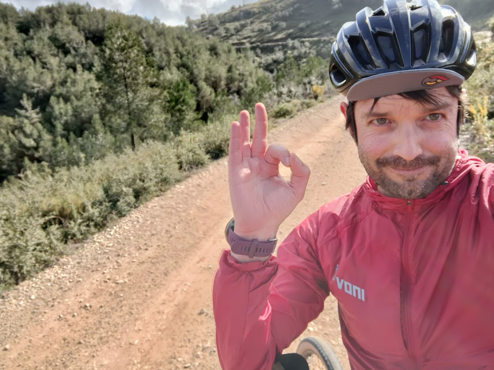

I am a mobility researcher with a background in environmental management, transport planning, and data analytics —oh, and I studied law too. I'm passionate about cycling, data visualisation, and maps, which drive my research on how people move through cities and how the built environment shapes their travel choices.
My current role is as a Postdoctoral Researcher at GEMOTT (the Research Group in Mobility, Transport, and Territory, from its Catalan acronym) in the Department of Geography at the Autonomous University of Barcelona. My primary work is on the ATRAPA project, which explores public acceptance of initiatives to promote walking and cycling. I’m also involved in research on active commuting to school and big data mobility projects.
This site is where I share my projects, presentations, and ideas—feel free to have a look or get in touch at eugenividal [at] hotmail [dot] com.